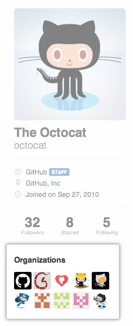

The audit log allows you to quickly review the actions performed by members of your organization. It includes details such as who performed the action, what the action was, and when it was performed.
The audit log lists actions performed within the last 90 days. Only members of the Owners team can access an organization's audit log
In the top right corner of any page, click your username.

On the left side of your profile page, under "Organizations", click the icon for your organization. 
On the right side of the organization profile page, click Audit log.
Search the audit log
The audit log lists the following information about actions made within your organization:
- Which repository an action was performed in
- The GitHub user that performed the action
- The action that was performed
- Which country the action took place in
- The date and time the action occurred
Note that you cannot search for audit entries using text. You can, however, construct search queries using a variety of filters. Many operators used when querying the audit log—such as -, >, or < —match the same format as searching across GitHub.
Search based on repository
Use the repo qualifier to limit actions to a specific repository owned by your organization. For example:
-
repo:my-org/our-repofinds all events that occurred for theour-reporepository in themy-orgorganization. -
repo:my-org/our-repo repo:my-org/another-repofinds all events that occurred for both theour-repoandanother-reporepositories in themy-orgorganization. -
-repo:my-org/not-this-repoexcludes all events that occurred for thenot-this-reporepository in themy-orgorganization.
Note that you must include your organization's name within the repo qualifier; searching for just repo:our-repo will not work.
Search based on the GitHub user
The actor qualifier can scope events based on the member of your organization that performed the action. For example:
-
actor:octocatfinds all events performed byoctocat. -
actor:octocat actor:hubotfinds all events performed by bothoctocatandhubot. -
-actor:hubotexcludes all events performed byhubot.
Note that you can only use a GitHub username, not an individual's real name.
Search based on the action performed
To search for specific events, use the action qualifier in your query. Actions listed in the audit log are grouped within the following categories:
| Category Name | Description |
|---|---|
account | Contains all activities related to your organization account. |
billing | Contains all activities related to your organization's billing. |
hook | Contains all activities related to webhooks. |
org | Contains all activities related organization membership |
payment_method | Contains all activities related to how your organization pays for GitHub. |
repo | Contains all activities related to the repositories owned by your organization. |
team | Contains all activities related to teams in your organization. |
You can search for specific sets of actions using these terms. For example:
-
action:teamfinds all events grouped within the team category. -
-action:billingexcludes all events in the billing category.
Each category has a set of associated events that you can filter on. For example:
-
action:team.createfinds all events where a team was created. -
-action:billing.change_emailexcludes all events where the billing email was changed.
A description of the events associated with these categories is listed below.
The account category
| Action | Description |
|---|---|
billing_cycle_change | Triggered when an organization's billing cycle changes. |
plan_change | Triggered when an organization's billing plan changes. |
The billing category
| Action | Description |
|---|---|
change_billing_type | Triggered when your organization changes how it pays for GitHub. |
change_email | Triggered when your organization's billing email address changes. |
The hook category
| Action | Description |
|---|---|
create | Triggered when a new hook was added to a repository owned by your organization. |
config_changed | Triggered when an existing hook has its configuration altered. |
destroy | Triggered when an existing hook was removed from a repository. |
events_changed | Triggered when the events on a hook have been altered. |
The org category
| Action | Description |
|---|---|
cancel_invitation | Triggered when an organization invitation has been revoked. |
invite_member | Triggered when a new GitHub user was invited to join your organization. |
The oauth_application category
| Action | Description |
|---|---|
create | Triggered when a new OAuth application is created. |
destroy | Triggered when an existing OAuth application is deleted. |
reset_secret | Triggered when an OAuth application's client secret of is reset. |
revoke_tokens | Triggered when an OAuth application's user tokens are revoked. |
transfer | Triggered when an existing OAuth application is transferred to a new organization. |
The payment_method category
| Action | Description |
|---|---|
clear | Triggered when a payment method on file is removed. |
create | Triggered when a new payment method is added, such as a new credit card or PayPal account. |
update | Triggered when an existing payment method is updated. |
The repo category
| Action | Description |
|---|---|
access | Triggered when a repository owned by an organization is switched from "private" to "public" (or vice versa). |
add_member | Triggered when a GitHub user is given collaboration access to a repository. |
create | Triggered when a new repository is created. |
destroy | Triggered when a repository is deleted. |
disable | Triggered when a repository is disabled (e.g., for insufficient funds). |
enable | Triggered when a repository is reenabled. |
remove_member | Triggered when a GitHub user is removed from a repository as a collaborator. |
rename | Triggered when a repository is renamed. |
transfer | Triggered when a repository is transferred. |
transfer_start | Triggered when a repository transfer is about to occur. |
The team category
| Action | Description |
|---|---|
add_member | Triggered when a member of an organization is added to a team. |
add_repository | Triggered when a team is given control of a repository. |
create | Triggered when a new team is created. |
destroy | Triggered when a team is deleted from the organization. |
remove_member | Triggered when a member of an organization is removed from a team. |
remove_repository | Triggered when a repository is no longer under a team's control. |
Search based on time of action
You can filter actions in the audit log based on what times actions occurred by using the created qualifier. You define dates using the format of YYYY-MM-DD--that's year, followed by month, followed by day. Dates support greater than, less than, and range qualifiers. For example:
-
created:2014-07-08finds all events that occurred on July 8th, 2014. -
created:>=2014-07-01finds all events that occurred on or after July 8th, 2014. -
created:<=2014-07-01finds all events that occurred on or before July 8th, 2014. -
created:2014-07-01..2014-07-31finds all events that occurred in the month of July 2014.
The audit log contains data for the past 90 days, but you can use the created qualifier to search for events earlier than that.
Search based on location
Using the qualifier country, you can filter actions in the audit log based on the originating country. You can use a country's two-letter short code or its full name. Keep in mind that countries with spaces in their name will need to be wrapped in quotation marks. For example:
-
country:definds all events that occurred in Germany. -
country:Mexicofinds all events that occurred in Mexico. -
country:"United States"all finds events that occurred in the United States.